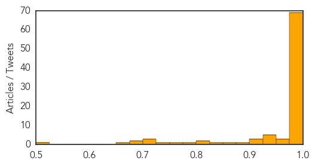

Swine Flu
30-Day Web Trend
12 alerts, 8 warnings
30-Day Twitter Trend
0 alerts, 0 warnings

Article Locations
Article Confidences
Top Articles:
- 1.000
- Stay at arm’s length from persons coughing or sneezing, avoid gathering and wash your hands frequently to check H1N1 spread Homeopathy can help
- 1.000
- 100 die from swine flu in India
- 1.000
- Swine flu in India: Cases cross 11,000 mark, Ajit Seth to chair a high-level meeting
- 1.000
- PM Modi directs proper treatment for patients as swine flu claims 703 lives
- 1.000
- Rajarhat boy dies of swine flu
- 1.000
- Northern Voices Online Swine flu claims 743 lives in India
- 1.000
- Cabinet secretary asks states to ensure all swine flu helplines work
- 0.999
- Two more swine flu deaths in Kashmir
- 0.999
- India Deploys Expert Teams to Study Rise in Flu Cases
- 0.999
- Swine flu claims more than 700 lives across India; over 11,000 affected
- 0.999
- Two more swine flu deaths in Kashmir
- 0.999
- Two more swine flu deaths in Kashmir
- 0.999
- Two more swine flu deaths in Kashmir
- 0.999
- Two more swine flu deaths in Kashmir
- 0.999
- Two more swine flu deaths in Kashmir
- 0.999
- Delhi government takes matter lightly despite surge in swine flu cases : India, News
- 0.999
- Two more swine flu deaths in Kashmir
- 0.999
- India urges calm as swine flu outbreak spreads
- 0.998
- Swine flu alert in northeast India, two women test positive
- 0.998
- Govt working seriously towards controlling the spread of swine flu in WB: Mamata
- 0.998
- Surgical masks flying off shelves amid swine flu paranoia in India's pink city
- 0.998
- Four more die of swine flu in Rajasthan, toll now 206
- 0.998
- Swine flu alert in northeast India, two women test positive
- 0.998
- Swine flu alert in northeast India, two women test positive
- 0.998
- Meghalaya govt alerts health officials about swine-flu
- 0.998
- Maintain separate wards for swine flu: U'khand CM
- 0.998
- Swine flu alert in northeast India, two women test positive
- 0.998
- Swine Flu Claims 703 Lives PM Directs Proper Treatment
- 0.997
- 24 new swine flu cases reported in UP
- 0.997
- State fixes swine flu test charges at Rs 2,500
- 0.997
- The Assam Tribune Online
- 0.997
- Swine flu positive cases cross 4,000 in Rajasthan
- 0.996
- Swine flu keeps Tamil Nadu on its toes
- 0.996
- Cong leader Jyotiraditya Scindia writes to health minister on swine flu in MP
- 0.996
- Swine flu kills 743, sets alarm bells ringing across India
- 0.996
- Latest News & Gossip on Popular Trends at India.com
- 0.996
- 10 more die of Swine flu
- 0.995
- Five more H1N1 cases surface, count up to 47
- 0.995
- Call this helpline for info on swine flu testing centres
- 0.995
- Karnataka fixes swine flu test charges at Rs 2,500
- 0.994
- Swine flu 'dangerous only for certain categories of people': J.P. Hospital
- 0.994
- Indian health authorizes say 700 have died in flu outbreak
- 0.993
- Child dies of swine flu in Kolkata
- 0.993
- Swine flu under control, claims Delhi health minister
- 0.993
- Swine flu 'dangerous only for certain categories of people': J.P. Hospital
- 0.992
- CPI(M) expresses concern over spread of swine flu in J-K
- 0.992
- Swine flu 'dangerous only for certain categories of people'
- 0.990
- Jammu SP dies of breathing disorder; swine flu suspected
- 0.990
- IPS academy turns into hospital as swine flu spreads on campus
- 0.990
- No Dearth of Swine Flu Medicine: Delhi Health Minster
Showing top 50 articles...
Top Tweets:
-
No tweets found for Feb 20, 2015
Cholera
30-Day Web Trend
0 alerts, 0 warnings

30-Day Twitter Trend
2 alerts, 0 warnings

Article Locations

Article Confidences

Top Articles:
- 0.997
- Mozambique cholera deal toll reaches 31
- 0.995
- UN Praises Cuba for Haiti Cholera Response
- 0.993
- Ancient Italian Churchyard Studied For Cholera DNA
- 0.990
- Malawi: Epidemics threaten survivors one month after the flood
- 0.987
- Malawi: Acute medical needs a month after the floods
- 0.979
- Six killed in suspected cholera outbreak in southern Nigeria
- 0.935
- UN Coordinator Against Cholera in Haiti to Visit Cuba
- 0.799
- Ghana, Business Advice, Jobs, News, Business Directory, Real Estate, Finance, Forms, Auto
- 0.786
- Cholera outbreaks stark reminder to get serious about sanitation
- 0.741
- NDDC Donates Drugs To Bayelsa Govt
- 0.687
- Mozambique: Floods Emergency appeal MDRMZ011 operations update n° 2 - Mozambique
- 0.669
- Uganda: Cholera Outbreak DREF operation n° MDRUG032 Final Report, 19 Feb 2015 - Uganda
- 0.518
- Wise Water Foundation calls on Methodist Presiding Bishop
Top Tweets:
- 0.896
- RT: Southern Africa Wkly Report 10-16Feb: 1908 cholera cases w 24 deaths confirmed in Nampula Niassa & Tete Mozambique http://…
- 0.578
- & colleagues on premptive use of cholera vaccines in high risk areas of Ebola countries http://t.co/WYQpfxmMyx vaccineswork